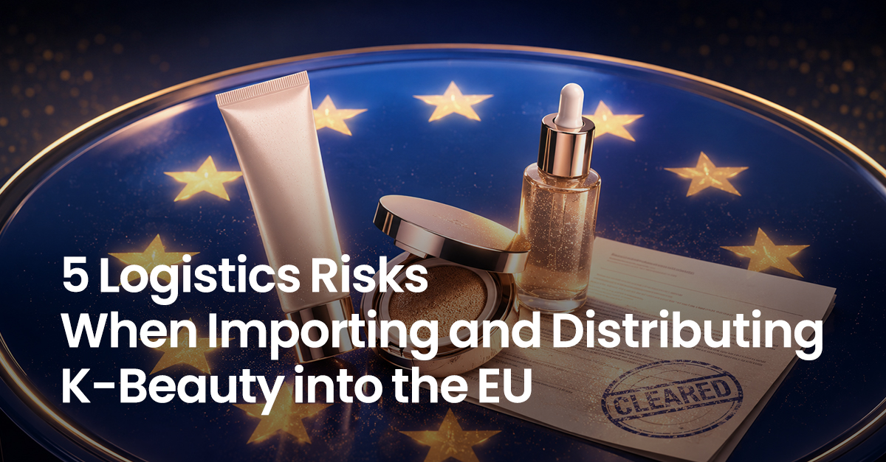

By Cello Square (Samsung SDS Logistics) Last updated: 29 July 2026
From compliance data to quality, batch traceability, dangerous goods and high-SKU inventory

Key summary
The five core logistics risks when importing and distributing K-beauty into the EU are: (1) mismatched regulatory/label data, (2) unsuitable product-specific storage and transport conditions, (3) weak batch (lot) traceability, (4) dangerous-goods misclassification, and (5) stockouts and disposals from high-mix, volatile demand. In the EU, cosmetics are a category where regulation, quality, safety and inventory are tightly interlinked, so the problem does not end at production stage — it surfaces in earnest during EU launch and inventory operations. Placing a product on the EU market requires appointing a Responsible Person in the EU, performing a safety assessment and drawing up the Cosmetic Product Safety Report (CPSR), compiling and maintaining a Product Information File (PIF) that includes the CPSR, complying with GMP, meeting labelling requirements, and notifying via CPNP — and among these, CPNP is a notification system, not a certification. Managing these five risks reduces launch delays, quality claims, recalls, stockouts and disposals.
| # | Logistics risk | Possible issues | Key management action |
|---|---|---|---|
| 1 | Mismatched regulatory / label data | Launch / customs-clearance / sales delays | Link SKU, market, label/artwork version and lot |
| 2 | Unsuitable storage / transport conditions | Formulation change, leakage, quality claims | Identify sensitive SKUs + manage storage/transport conditions |
| 3 | Weak batch traceability | Wider recall scope, slower response | Connect lots from inbound to returns; inventory quarantine system |
| 4 | Dangerous goods misclassification | Air booking refusal, repacking, shipment delay | Pre-shipment classification + mode-specific packaging/marking/docs review |
| 5 | High-mix, volatile demand | Stockouts and dead stock at the same time | ABC-XYZ, FEFO for date-managed SKUs, fast replenishment |
Scope
This article is based on the EU market. Great Britain (England, Scotland and Wales) uses a separate SCPN system rather than CPNP and requires a UK-established Responsible Person. Northern Ireland follows EU cosmetics rules and the CPNP system, and the Responsible Person must be established in Northern Ireland or the EEA.
Why is K-beauty EU logistics more complex than for general consumer goods?
K-beauty logistics complexity begins not only with regulation but with the product’s SKU structure itself. K-beauty has frequent new launches and limited editions and various color, size and formulation variants, and with sets and samples added, the SKU mix often changes quickly. Once you enter the EU, sales language and channel conditions differ by member state, so even the same product may need to be managed as separate stock by market and label version. Simultaneous stockouts of popular SKUs and dead stock of long-tail SKUs also intensify. The starting point, then, is simply that there are many SKUs and lots to manage, changing fast.

Risk 1. Mismatched regulatory / label data
Regulatory compliance is decided before launch, but what keeps it valid in the market is logistics data. Placing a product on the EU market requires appointing an EU-based Responsible Person, performing a safety assessment to produce the Cosmetic Product Safety Report (CPSR), and compiling and maintaining a Product Information File (PIF) that includes the CPSR. Alongside this you must meet the labelling requirements under Article 19, comply with Good Manufacturing Practice (GMP), and notify via CPNP under Article 13, among other duties. Appointing an RP and notifying CPNP are only part of the full set of requirements. (The PIF is kept for ten years from the date the last batch was placed on the market.)
CPNP is a notification system, not a certification or sales-approval step. Under EU law, the compliance responsibility lies with the Responsible Person (for products manufactured outside the EU, the EU importer is generally the RP, or an EU-based entity is designated as RP by written mandate), while importers and distributors also bear their own obligations according to their position in the supply chain. The task in logistics operations is to keep the product’s regulatory compliance from being compromised during transport, storage and distribution by accurately linking and maintaining the relevant data.
Where this breaks down in practice is data linkage, and the data is best managed by characteristic. A product/regulatory master holds the product name, Responsible Person, CPNP notification status, sellable markets, labelling requirements, storage conditions, dangerous-goods classification status, and the ingredient/regulatory reference information needed for label and DG decisions. A label/artwork master holds the applicable languages, versions and effective dates; a lot/inventory record links the batch number, manufacturing date or minimum-durability date, quantity, location and sellable/holding status.
So the real unit of management in EU cosmetics logistics is not a single “product” but “SKU × market × label/artwork version × lot”.
2026 timeliness. The EU has expanded fragrance allergen labelling (Regulation (EU) 2023/1545). The transition period for placing non-compliant products on the EU market ends on 31 July 2026, and products lawfully placed before then may be made available on the market until 31 July 2028. During the transition, separating old and new label stock, relabelling and stickering by member state, preventing the mixing of old and new label/artwork versions, distinguishing sellable from holding stock, and maintaining lot traceability through repacking all become real logistics tasks.
Local labelling is not merely a warehouse add-on task. Where a distributor, to comply with national law, voluntarily translates a labelling element of a product already placed in one member state in order to make it available in another, the distributor must submit its information to the Commission electronically under Article 13(3). Translation alone does not automatically make the distributor the Responsible Person. However, placing the product under its own name or trademark, or changing the product or its labelling in a way that may affect compliance, can make that distributor the Responsible Person — so prior review and strict version control are needed.
Separately from the EU Cosmetics Regulation, the EU Packaging and Packaging Waste Regulation (PPWR), which applies generally from 12 August 2026, overlaps and requires reviewing product, e-commerce and transport packaging together. That said, PPWR’s detailed obligations on labelling, recycled content and reuse apply in phases by provision, so it does not mean all packaging must be replaced on 12 August 2026.

Risk 2. Unsuitable storage / transport conditions
The core of cosmetics quality management is not “always refrigerate” but product-specific stability management. Each product has stability conditions set by the manufacturer, so what matters is not refrigeration but how you manage each product’s storage conditions and temperature-excursion response. You do not need real-time temperature monitoring on every SKU; it is more practical to identify heat-, freeze- and long-dwell-sensitive SKUs in advance and decide on data loggers by route and season.
In the EU, this quality management is directly tied to compliance. The EU Cosmetics Regulation requires distributors, before making a product available, to verify certain label information and language requirements and, where applicable, that the date of minimum durability has not passed (Article 6(2)), and to ensure that storage or transport conditions do not compromise the product’s compliance while it is under their responsibility (Article 6(4)). So the release criteria after a temperature excursion in transit, and decisions on whether returned products can be resold, must be set from this perspective.

Risk 3. Weak batch (lot) traceability
You must distinguish the “legal obligation” the regulation imposes from logistics “best practice.” The EU Cosmetics Regulation requires a batch number (or a reference that identifies the product) on the label (Article 19) and the identification of counterparties in the supply chain (who supplied you and whom you supplied). This identification obligation applies for three years from the date the batch was made available to the distributor (Article 7). By contrast, WMS lot-level inventory management, lot distribution history by channel, system-based quarantine and automatic recall-scope calculation are not methods the regulation prescribes but recommended operational practices for fulfilling that obligation quickly and accurately.
Expiration date labelling is often misunderstood in logistics. Products with a minimum durability of 30 months or less show a date of minimum durability. Products lasting more than 30 months are not required to show that date and, except where durability after opening is not relevant, must show a Period After Opening (PAO). There is an important distinction: PAO is the usage period after the consumer opens the product, so it is not the same as a warehouse stock expiry date. Products labelled only with a PAO need a separate internal criteria for quality assurance or release period set by the manufacturer or Responsible Person, and for products with a managed date, applying FEFO (releasing the nearest-to-expiry stock first) is appropriate.
A market-sensitivity indicator. In the EU’s 2025 Rapid Exchange of Information System (Safety Gate) report, cosmetics accounted for 36% of all alerts (4,671), the most-reported category. However, this 36% is not a defect rate for cosmetics on the EU market but the share of that year’s dangerous-product alerts that concerned cosmetics, and about 80% of cosmetics alerts related to the detection of the banned fragrance Butylphenyl Methylpropional (commonly Lilial). Even so, an issue can lead to border entry refusal, market withdrawal, delisting from online sales and consumer recall — so ingredient compliance and lot-level traceability and quarantine capability matter.
Samples, testers and giveaways, common in K-beauty, may fall within the scope of “making available on the market” under EU rules when provided free of charge in the course of a commercial activity. Even if handled through a process separate from regular sales stock, it is advisable to set separate lot and release criteria and trace them.

Risk 4. Dangerous-goods misclassification
Not all cosmetics are dangerous goods, but some SKUs can be classified as dangerous goods depending on their ingredients, physical properties, propellant and packaging. That is why only some SKUs within the same brand may have different air bookings or packaging.
- Perfumes / alcohol-containing products: may require Class 3 (flammable liquid) review depending on alcohol content and flash point.
- Aerosol products: may be classified as Class 2 depending on propellant and hazard characteristics.
- Nail products / removers: may fall under Class 3 depending on solvents and flash point.
The correct order is to confirm the basic classification, then review mode-specific requirements. Air follows IATA DGR, sea the IMDG Code, and European road transport ADR — reviewing packaging, marking, labelling, documentation and permitted quantities — and where rail transport is involved, confirm RID and other applicable rules separately. A Safety Data Sheet (SDS)’s transport information is a starting point, but holding an SDS alone does not complete classification; confirm it against manufacturer information and carrier conditions.
EU-specific point — multimodal transport and set products. Cargo arriving in the EU by air or sea from Asia often continues by intra-EU inland transport. Building on the basic dangerous-goods classification, confirm that permitted quantities, packaging, marking/labelling, documentation and carrier conditions carry through across the air, sea, road and rail legs. Also, a set or promotional bundle products containing even one DG SKU may make DG requirements apply to that package or shipment — so check at the set product assembly stage, not just before release, to avoid peak-season shipping delays.

Risk 5. Stockouts and disposals from high-mix, volatile demand
Rather than running all SKUs under a single inventory policy, vary local stocking levels by sales volume and demand variability. Overstocking products that carry an expiration date increases disposal risk, while understocking causes stockouts of popular SKUs and lost sales opportunities. You need to segment SKUs and apply different inventory policies.
- High volume, low variability: permanent stock in a European local warehouse.
- High volume, high variability: fast replenishment (reorder) system.
- Low-turnover long tail: centralized or order-linked.
In inventory terms, this combines ABC analysis (by sales contribution) with XYZ analysis (by demand variability) — the ABC-XYZ approach. Tasks advantageous to perform locally in Europe include set assembly, member-state labelling and stickering, repacking, initial allocation and reorder-point setting for new products, and inter-country stock transfers. Combine sea and air to balance lead time and cost, and clear near-expiry stock through separate channels within what the law and the brand’s quality/sales policy allow when demand spikes.
Conclusion
EU K-beauty logistics is not about explaining regulation but about reducing “launch delays, quality loss, stockouts and disposals.” The five risks (linking regulatory data, product-specific stability, batch traceability, dangerous-goods classification, high-mix inventory) each lead to customs delays, quality claims, stockouts or disposals if any one goes wrong. Conversely, if you can design everything from regulation-informed transport and storage operations through quality maintenance, dangerous-goods handling and high-mix fulfillment as a single flow, that complexity itself becomes a competitive advantage that sets the pace of the brand’s European expansion.
Frequently Asked Questions (FAQ)
- Q. Do I need CPNP certification to sell K-beauty in the EU?
- No. CPNP is not a certification or product-approval step but a system for submitting information before the product is placed on the EU market. Placing a product on the EU market requires not only appointing an EU-based Responsible Person but also a safety assessment and CPSR, a PIF that includes the CPSR, GMP compliance, compliant labelling and CPNP notification, among other requirements. The compliance responsibility lies with the Responsible Person.
- Q. When shipping cosmetics to the EU, are perfumes and aerosols always dangerous goods?
- The product name alone does not decide this. Perfume may be Class 3 depending on alcohol content and flash point, and aerosols Class 2 depending on propellant, but the actual classification depends on ingredients, concentration, packaging, quantity and applicable exemptions. Confirm by transport mode (IATA DGR / IMDG / ADR) before shipment.
- Q. When does the EU fragrance allergen labelling rule take effect?
- Under Regulation (EU) 2023/1545, the transition period for placing non-compliant products on the EU market ends on 31 July 2026. Products lawfully placed before then may be made available until 31 July 2028.
- Q. Do I need a separate cosmetic label for each EU member state?
- Separate package by member state is not necessary. You may use a common multilingual pack, but the language of certain mandatory information — nominal content, date of minimum durability, precautions, product function — must follow the law of the member state of final sale. Where a distributor voluntarily translates the labelling to make a product already placed in one member state available in another so as to meet national law, the distributor must notify under Article 13(3).
- Q. Is the batch number on EU cosmetics a legal requirement?
- Yes. The EU Cosmetics Regulation requires a batch number (or an identifying reference) on the label and the identification of counterparties in the supply chain, and this identification obligation applies for three years from the date the batch was made available. But WMS lot management and FEFO release are recommended operational practices for meeting this obligation, not methods prescribed by the regulation.
- Q. If a set product contains perfume, is air transport impossible?
- Not necessarily impossible, but if it contains a DG SKU, dangerous-goods packaging, marking, documentation and quantity limits may apply to that package or shipment. Confirm the transport classification before assembling the set to avoid peak-season shipping delays.
- Q. How do the date of minimum durability and PAO differ?
- Under EU rules, products with a minimum durability of 30 months or less show a date of minimum durability. Products lasting more than 30 months are not required to show that date and, except where durability after opening is not relevant, must show a PAO. Because PAO is the period after the consumer opens the product, it is not the same as a warehouse stock expiry date; products labelled only with a PAO need a separate operational standard such as the manufacturer's or Responsible Person's internal release period.
Struggling with K-beauty logistics from Asia to the EU?
Review with Cello Square how to run ocean and air transport, local storage, packaging and labelling, returns and high-mix fulfillment for EU-bound cosmetics. We can connect international transport with your European inventory operations to fit your product characteristics and sales plans.
Related: “Why K-Beauty Logistics Is More Complex Than General Cargo — 4 Key Challenges: Market-Entry Rules, Quality, Dangerous Goods and SKU” (the general hub article).
References
Primary sources underpinning the facts in this article. Regulatory details are current as of publication; verify the latest amendments in the source texts.
- 1. European Union, Cosmetic Products Regulation (EC) No 1223/2009 (consolidated) — Art. 4 Responsible Person; Art. 6 distributor obligations (label/language checks and maintaining storage/transport conditions); Art. 7 supply-chain traceability (three years); Art. 13 notification; Art. 19 labelling (date of minimum durability, PAO, batch number). EUR-Lex (eur-lex.europa.eu).
- 2. European Commission, Cosmetic Products Notification Portal (CPNP) — a pre-market notification system (not a certification or sales approval). European Commission, Cosmetics.
- 3. European Union, Commission Regulation (EU) 2023/1545 on fragrance allergen labelling — transition deadlines 31 July 2026 (placing on the market) / 31 July 2028 (making available). EUR-Lex (eur-lex.europa.eu/eli/reg/2023/1545).
- 4. European Union, Packaging and Packaging Waste Regulation (PPWR), Regulation (EU) 2025/40 — general application from 12 August 2026 (detailed obligations phased by provision). EUR-Lex / European Commission.
- 5. European Commission, Safety Gate 2025 annual report — cosmetics were 36% of 4,671 alerts; about 80% of cosmetics alerts related to a banned fragrance. op.europa.eu (Safety Gate 2025 report).
- 6. Dangerous-goods transport frameworks: IATA Dangerous Goods Regulations (DGR, air), IMDG Code (sea, IMO), ADR (European road, UNECE), RID (rail) — the shipper is responsible for correct classification for air. Industry explainer: DHL (dhl.com).
- 7. GOV.UK, guidance on Great Britain cosmetic product notification (SCPN), the UK Responsible Person, and Northern Ireland applicability. gov.uk.
- 8. Ministry of Food and Drug Safety (MFDS, Korea), H1 2026 cosmetics export figures (approx. US$7 billion, +27.3% YoY; the US the largest market, Europe growing), including related reporting.
- 9. Cello Square (Samsung SDS Logistics), services overview (international transport, customs, warehousing, packaging/labelling, returns, fulfillment). cello-square.com.
▶ This content provides general information on EU cosmetics logistics operations and does not constitute legal,
regulatory or dangerous-goods classification advice. Confirm product-specific requirements with the Responsible
Person, the relevant authorities, manufacturers and qualified professionals.
▶ Unauthorized reproduction, adaptation, or commercial use of this content without prior consent is prohibited.
© Cello Square (Samsung SDS). All rights reserved.